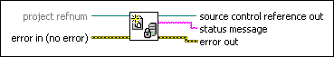

SCC Open SCC Project VI
Owning Palette: Source Control VIs
Requires: Professional System
Opens a new and unique reference to a source control project that you can use with the Source Control VIs.
The VI uses the configuration settings from the current source control provider to generate the reference. If you wire a LabVIEW project reference to Project Refnum, this VI generates a reference to the source control project you specify for the LabVIEW project.

 Add to the block diagram Add to the block diagram |
 Find on the palette Find on the palette |